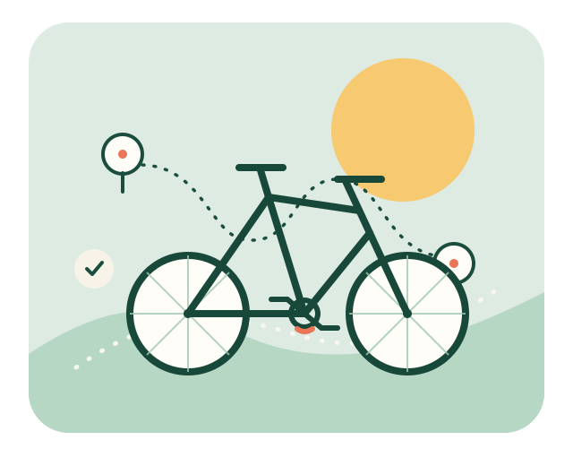

Hjelp sykkelen hjem.
Når en sykkel blir borte, er det lett å lure på hvor du skal begynne. Hjulspor viser veien til tjenestene som kan hjelpe – enten du har mistet en sykkel, funnet en eller vil gjøre dine egne sykler søkbare allerede nå.

Velg veien videre
Hva passer for deg?
Tre korte veier videre, uten at du må lære deg alle registrene først.
Jeg har mistet sykkelen min
Finn ut hva du kan gjøre nå, enten sykkelen er feilplassert eller kan være stjålet.
Se rådeneJeg har funnet en sykkel
Sjekk registrene, gi eieren en sjanse til å finne den og se hva du gjør videre.
Finn neste stegRegistrer syklene dine i forkant
En forhåndsregistrert sykkel er lettere å kjenne igjen og koble til deg hvis den blir borte.
Gjør syklene søkbareFør noe skjer
Det beste sporet lager du på forhånd.
Registrer alle syklene dine mens du fortsatt har dem. Da kan noen som finner en av dem, søke den opp uten å vente på at du oppdager tapet.
Slik gjør du detStart gjerne med Bike Index
Bike Index er gratis og drives av en ideell organisasjon. Der kan du gjøre syklene søkbare før de blir borte.
Et FG-godkjent register kan i tillegg gi lavere egenandel hos enkelte forsikringsselskaper. Det avhenger av avtalen din.
Se begge muligheteneEksisterende tjenester
Ett sted å begynne. Flere steder å lete.
Hjulspor er en veiviser. Søkene og registreringene skjer hos tjenestene som allerede finnes.
Et søk uten treff betyr ikke at sykkelen er uten eier eller ikke er stjålet.
Funnet en sykkel?
En liten innsats kan bety en stor hjemtur.
Vi hjelper deg å velge søk, dele passe mye informasjon og finne riktig videre vei når eieren ikke er kjent.
Se hva du kan gjøre